Same masonry, silhouettes, placements and UI. The far wall is cooler and darker, the standing floor has three clearer depth values, and the existing torch regions use warm brown/orange stone planes with a little reflected warmth on the floor. Direct LibreSprite edits; no generation.
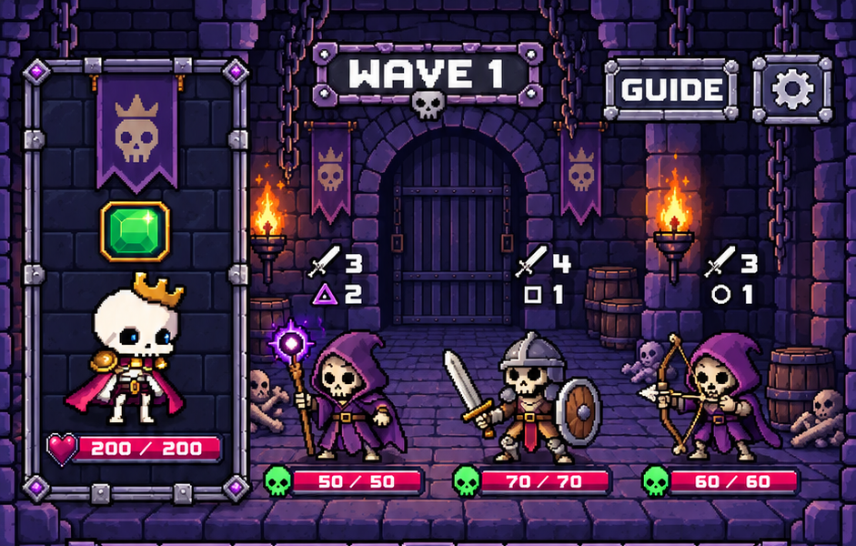
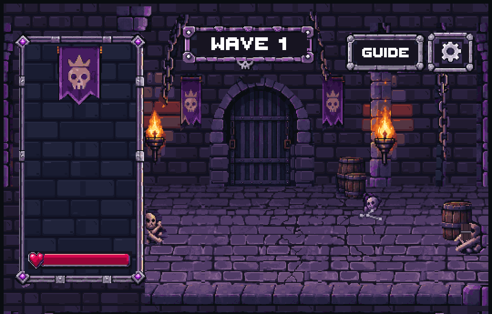
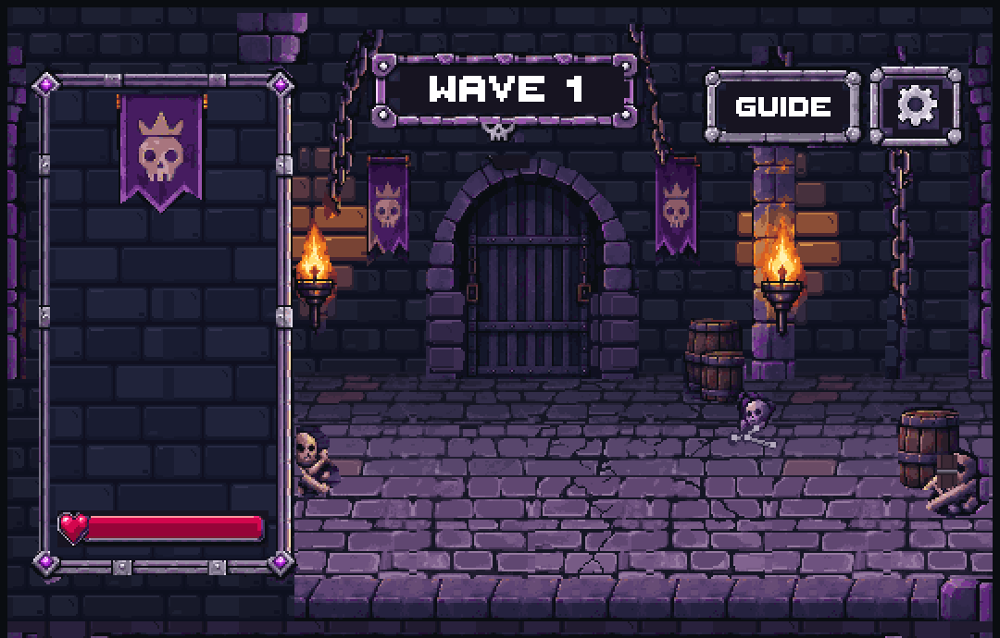
Fit view changes display size only. Actual-pixel mode shows capture pixels. Existing modular stone topology remains more regular than the mockup; this correction intentionally preserves it. The art preview has no combat characters or gems.
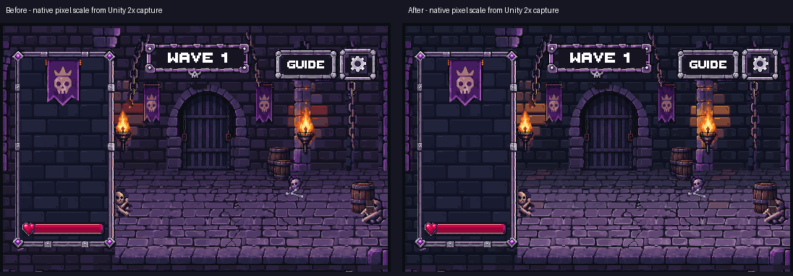
Pass 1 improved depth, stage clarity and stone readability while preserving layout. Broad orange faces were too strong. Pass 2 softened those faces, retained warm lit edges, and tinted only complete existing floor-stone clusters beneath the torches.
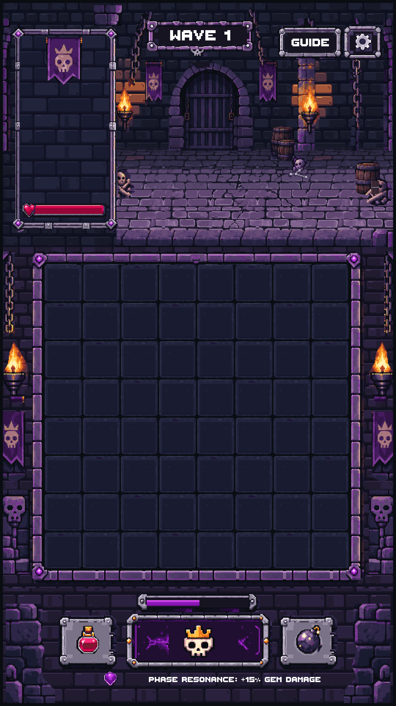
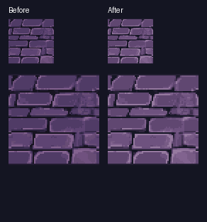
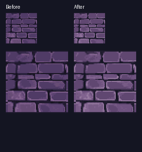
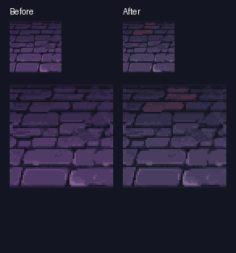
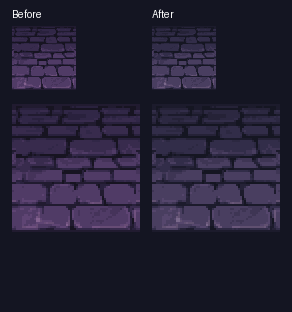
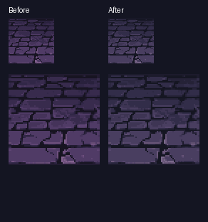
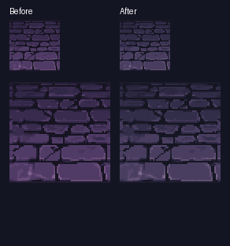
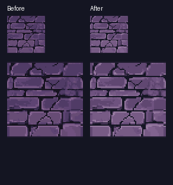
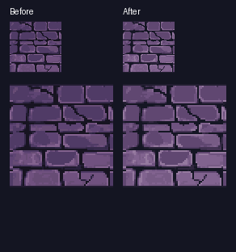
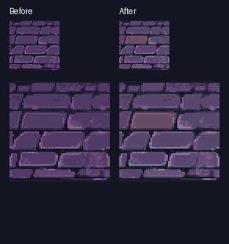
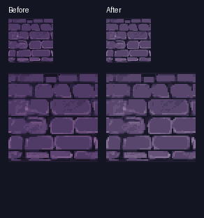
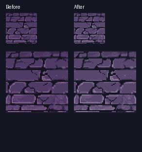
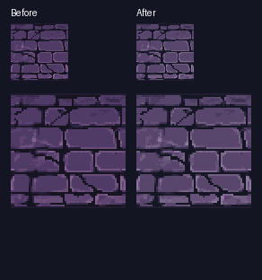
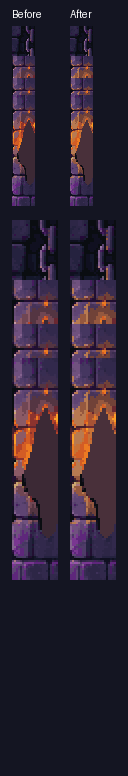
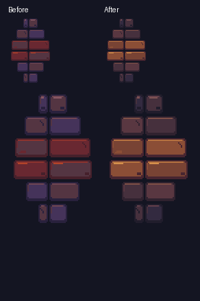
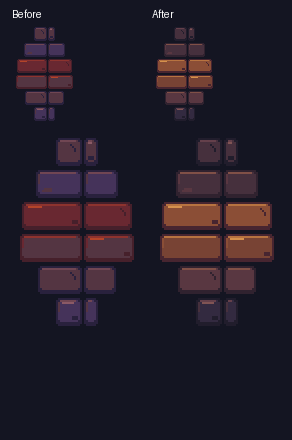
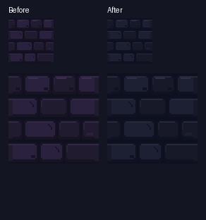
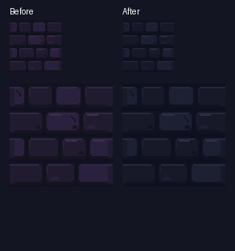
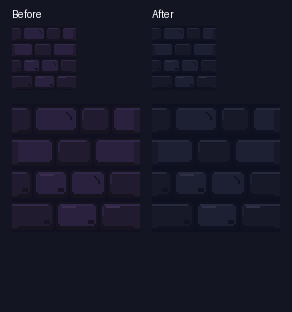
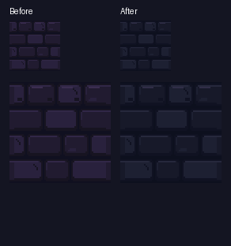
Verified: all 150 native cel/export/Unity copies agree; binary alpha; 224 edge pairings; two Unity EditMode tests across four layouts. Scene, placement manifest, layout code, build settings and all six golden-reference/production image hashes are unchanged. User visual approval is pending.